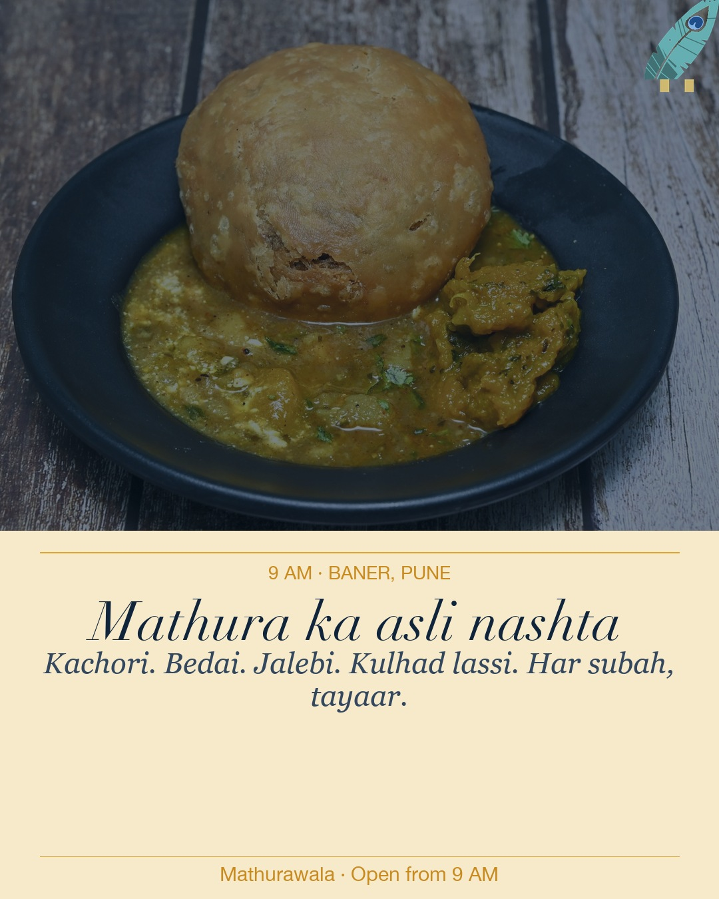
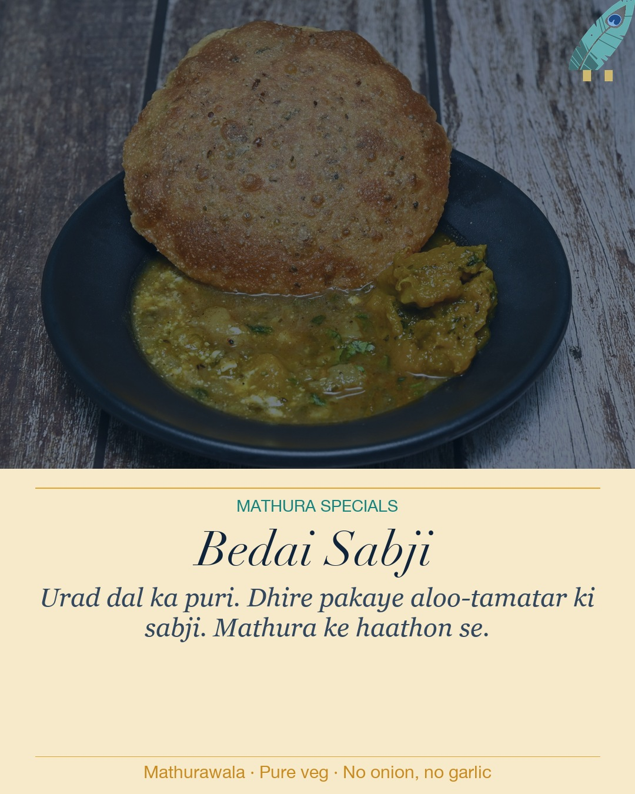
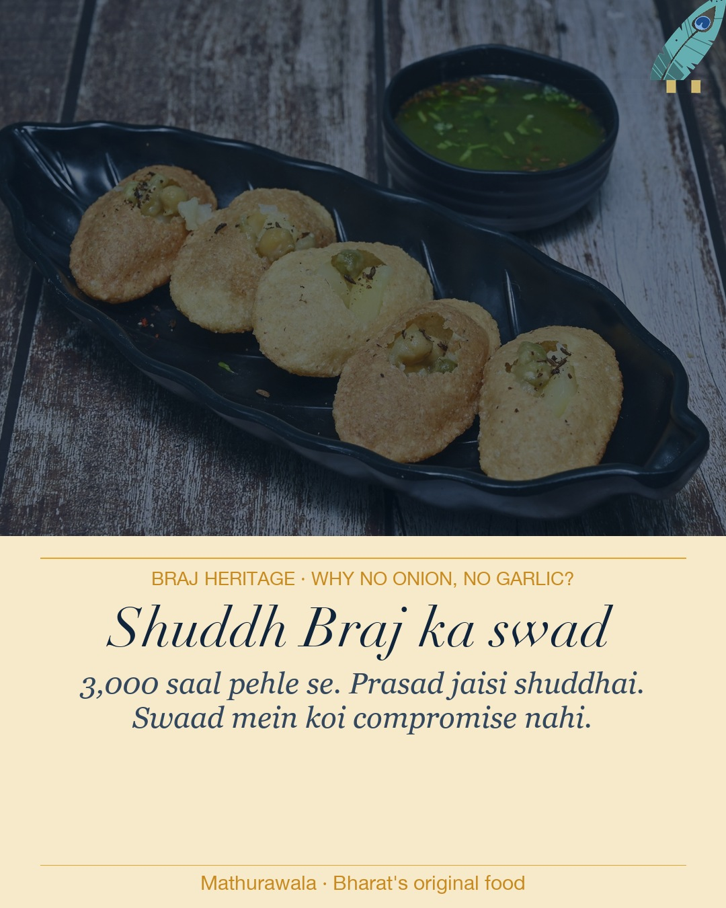
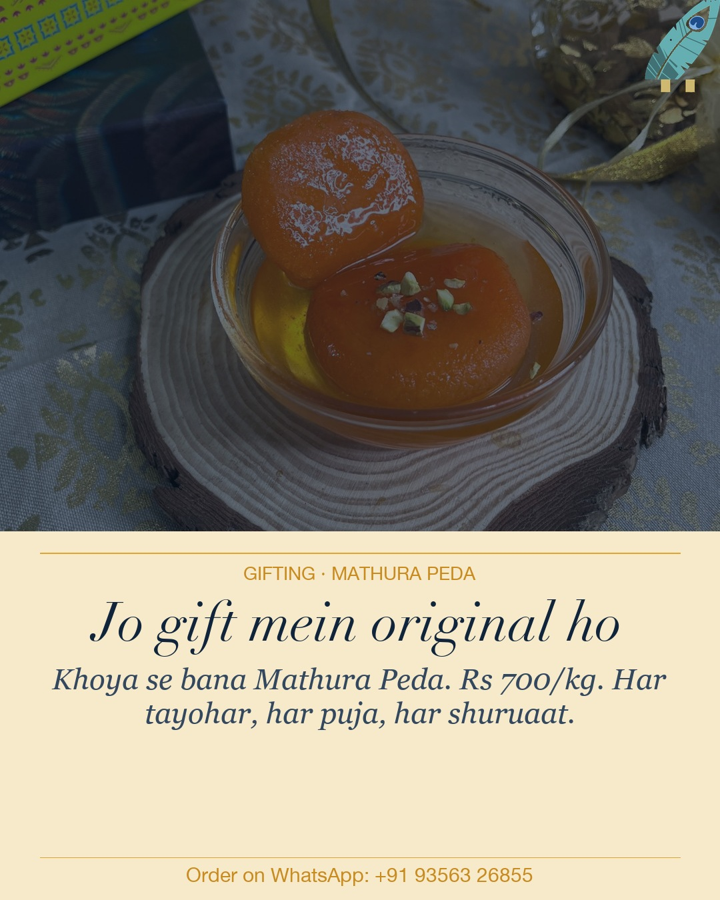

Week 5 · Mon · 9 AMFeed · 1080x1350
Morning Nashta — own the 9 AM slot
Why: Ketan identified morning as the key daypart to grow. Posting at 9 AM means people see it when they're deciding where to eat breakfast after opening. Great for Google too — "kachori near me" morning search.
9 baje ki subah, Baner mein.
Kachori. Bedai. Jalebi. Kulhad lassi.
Mathura wali asli nashta ki plate.
Koi shortcut nahi. Koi mixer nahi.
Haath se, tawa par, roz subah.
Aaiye. 9 AM se.
Mathurawala, Baner.
Radhe Radhe 🦚
#mathurawala #morningnashta #kachori #baner #punefood #mathura #aslibrajkaswad #bedaisabji

Week 5 · Thu · 7 PMFeed · 1080x1350
Bedai Sabji — the dish that says who we are
Why: Bedai is rarer and more distinctively Mathura than kachori. People who know it recognise us instantly. People who don't will ask. Both outcomes are good.
Bedai toh sirf Mathura mein milti hai.
Urad dal ki puri. Dhire pakaye aloo-tamatar ki sabji.
Hing ka chhaunk. Bilkul Mathura wala.
Iss plate mein koi garlic nahi. Koi onion nahi.
3,000 saal se aise hi banta hai.
Mathurawala mein milti hai.
Baner, Pune. Subah se raat tak.
Radhe Radhe 🦚
#bedaisabji #mathura #brajfood #mathurawala #purevegetarian #nooniononogarlic #punefood #baner

Week 5 · Sat · 11 AMFeed · 1080x1350
Shuddh Braj ka swad — heritage education post
Why: Strong SEO angle. "No onion no garlic food near me" is a real search. And for people who avoid onion/garlic for religious reasons (Jains, Vaishnavas, Navratri observers), this is the signal they look for. Link to /braj-kitchen/ in Stories for authority.
Kya aap ne socha hai kyun?
Mathura ka khana hamesha bina pyaz, bina lahsun ka kyun hota hai?
Kyunki yeh bhog hai, prasad hai.
Krishna ke shahar ki dharohar.
Satvik. Shuddh. 3,000 saal pehle se.
Hamari kachori, bedai, paani poori aur nashta
sab kuch bina pyaz, bina lahsun ke banta hai.
Isi mein Braj ka swad hai.
Mathurawala, Baner, Pune.
Radhe Radhe 🦚
#noonion #nogarlic #sattvik #brajcuisine #mathurawala #punefood #jainfood #navratrispecial #aslibharatkaswad
Story CTA: "Jaano Braj food ki poori kahani" -> link to mathurawala website /braj-kitchen/

Week 6 · Tue · 6 PMFeed · 1080x1350
Photo note: current image shows kala jamun, not flat peda disc. Swap with a proper Mathura peda photo before posting if available at the outlet.
Mathura Peda gifting — opens the conversation early
Why: Raksha Bandhan is 28 Aug. Posting this 6+ weeks before begins seeding the gifting conversation. Peda = the one thing that makes us truly distinctive vs every other sweet shop in Pune.
Mathura ka naam hi kaafi hai.
Khoya se bana. Thoda grainy. Thoda sweet.
Asli Mathura Peda.
Koi copycat nahi bana sakta iss swad ko.
Kyunki yeh sirf ek jagah se aata hai.
Festivals ke liye. Puja ke liye.
Ya bas yun hi kisi khaas ko dene ke liye.
Rs 700/kg. WhatsApp karein advance mein.
Mathurawala, Baner, Pune.
Radhe Radhe 🦚
#mathurapeda #mathura #gifting #punefood #festivegifting #mathurawala #brajsweets #aslimithai